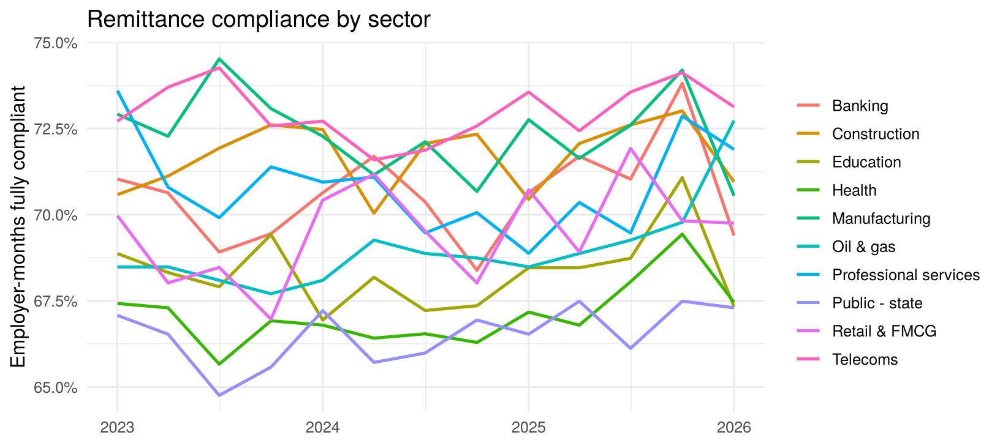

Compliance: which employers remit late, short or not at all, and is it getting better?
Enforcement: where should a limited enforcement team focus? Do reminder letters work?
Contributor experience: what are contributors complaining about, in English and Pidgin?
Regulatory reporting: consistent numbers for returns to PenCom.
24.2 Architecture mapped to a pension operator or regulator
Layer
In pensions
Sources
Employer remittance schedules, PFC custodian bank statements, the RSA register, the employer register (with sector and state), enforcement case system, complaints portal and call-centre notes
Silver
Employer-months typed; “not yet paid” distinguished from “paid on time”; employer identities pseudonymised (employer_name_hash); complaint text typed by language
Gold
fct_remittance (employer × month), dim_employer, fct_complaint; marts: compliance by sector and state, experiment read-out, complaint themes
Gate
Unique employer-month; remitted ≤ expected × tolerance; every remittance has an employer; totals reconcile to custodian receipts
Govern
Remittance compliance rate, shortfall ₦, unpaid employer-months, median days late, 90-day default rate
Serve
Enforcement work-queue (Dataverse/Power Apps for field officers); regulator dashboards; certified regulatory marts
Plane
Contributor data is personal (RSA PIN, salary); employer identities confidential during enforcement; DPIA for any AI on complaints
24.3 Run the pipeline
spec <-list(name ="pensions",bronze =list(remittances ="pension_remittances.csv", employers ="pension_employers.csv"),silver =list(employers ="SELECT employer_code, sector, state, CAST(registered AS INTEGER) registered, CAST(employees AS INTEGER) employees, employer_name_hash FROM bronze.employers",remittances =" -- Materiality thresholds are POLICY, owned by Compliance, and passed in as parameters (see below) SELECT employer_code, strptime(contribution_month || '-01', '%Y-%m-%d')::DATE AS month, CAST(employees_reported AS INTEGER) employees_reported, CAST(expected_ngn AS DOUBLE) expected_ngn, CAST(remitted_ngn AS DOUBLE) remitted_ngn, TRY_CAST(days_late AS DOUBLE) days_late, CASE WHEN CAST(remitted_ngn AS DOUBLE) = 0 THEN 'unpaid' -- null days_late here means NOT paid, not on time WHEN CAST(remitted_ngn AS DOUBLE) < 0.85 * CAST(expected_ngn AS DOUBLE) THEN 'short' WHEN TRY_CAST(days_late AS DOUBLE) > 30 THEN 'late' ELSE 'compliant' END AS status, CASE WHEN CAST(remitted_ngn AS DOUBLE) = 0 THEN 'unpaid' WHEN CAST(remitted_ngn AS DOUBLE) < 0.99 * CAST(expected_ngn AS DOUBLE) THEN 'short' WHEN TRY_CAST(days_late AS DOUBLE) > 0 THEN 'late' ELSE 'compliant' END AS status_strict, reminder_arm, CAST(enforcement_case_opened AS INTEGER) enforcement_case, CAST(default_90d AS INTEGER) default_90d FROM bronze.remittances"),gold =list(dim_employer ="SELECT * FROM silver.employers",fct_remittance ="SELECT *, expected_ngn - remitted_ngn AS shortfall_ngn FROM silver.remittances",mart_compliance =" SELECT e.sector, date_trunc('quarter', r.month) AS quarter, COUNT(*) employer_months, AVG((r.status = 'compliant')::INT) compliance_rate, SUM(r.shortfall_ngn) shortfall_ngn, SUM((r.status = 'unpaid')::INT) unpaid_months FROM gold.fct_remittance r JOIN gold.dim_employer e USING (employer_code) GROUP BY ALL"),tests =list(t_unique("gold.fct_remittance", c("employer_code", "month")),t_unique("gold.dim_employer", "employer_code"),t_relationship("gold.fct_remittance", "employer_code", "gold.dim_employer"),t_custom("remitted ≤ expected (+1%)", "SELECT COUNT(*) FROM gold.fct_remittance WHERE remitted_ngn > 1.01 * expected_ngn"),t_accepted("gold.fct_remittance", "status", c("compliant", "late", "short", "unpaid")),t_custom("no null days_late on compliant or late rows", "SELECT COUNT(*) FROM gold.fct_remittance WHERE status IN ('compliant','late') AND days_late IS NULL", sev ="warn")),publish =c("gold.mart_compliance"))pn <-run_pipeline(spec)show_tests(pn$tests)
dbGetQuery(pn$con, "SELECT status, COUNT(*) employer_months, round(SUM(shortfall_ngn)/1e9, 2) shortfall_bn FROM gold.fct_remittance GROUP BY 1 ORDER BY 2 DESC")
status
employer_months
shortfall_bn
compliant
64007
25.62
late
19948
8.32
unpaid
5434
29.65
short
2291
10.06
24.3.1 The definition is the decision
Most employers remit something close to the expected amount, a little late. Whether they count as “compliant” depends entirely on the rule:
dbGetQuery(pn$con, "SELECT 'strict: 100% (±1%), 0 days late' AS definition, round(100*AVG((status_strict='compliant')::INT),1) AS compliant_pct FROM gold.fct_remittance UNION ALL SELECT 'materiality: ≥85% remitted, ≤30 days late', round(100*AVG((status='compliant')::INT),1) FROM gold.fct_remittance")
definition
compliant_pct
strict: 100% (±1%), 0 days late
0.2
materiality: ≥85% remitted, ≤30 days late
69.8
The same data gives a headline compliance rate of almost nothing under one definition and a majority under the other. Neither number is wrong; they answer different questions. That is exactly why the definition belongs in the semantic layer, approved by the Head of Compliance, with both thresholds as named parameters. A dashboard that silently picks one is making policy without authority.
24.4 Insight 1: compliance by sector
cs <-dbGetQuery(pn$con, "SELECT sector, quarter, compliance_rate FROM gold.mart_compliance ORDER BY quarter")ggplot(cs, aes(quarter, compliance_rate, colour = sector)) +geom_line(linewidth = .9) +scale_y_continuous(labels = scales::percent) +labs(x =NULL, y ="Employer-months fully compliant", colour =NULL, title ="Remittance compliance by sector")

24.5 Insight 2: do reminder letters work? (a randomised experiment)
Some employers were randomly assigned to receive a reminder letter (reminder_arm = 'letter') or nothing ('control'). Because assignment was random, the difference in subsequent default is a causal effect, unlike most of what dashboards show.
ex <-dbGetQuery(pn$con, "SELECT reminder_arm, COUNT(*) n, SUM(default_90d) AS n_default FROM gold.fct_remittance WHERE reminder_arm IS NOT NULL GROUP BY 1 ORDER BY 1")ex$default_rate <-round(ex$n_default / ex$n, 4)srm_p <-chisq.test(ex$n)$p.valuept <-prop.test(ex$n_default, ex$n)ex; cat(sprintf("SRM check p = %.2f (balanced) | difference p = %.3g | absolute effect = %.1f percentage points", srm_p, pt$p.value, 100*diff(rev(ex$default_rate))))
reminder_arm
n
n_default
default_rate
control
1365
399
0.2923
letter
1416
269
0.1900
SRM check p = 0.33 (balanced) | difference p = 3.59e-10 | absolute effect = 10.2 percentage points
A cheap letter changes behaviour, and the platform can prove it. That turns enforcement from intuition into evidence: send letters at scale, and reserve field visits for employers who ignore them.
24.6 Insight 3: what contributors complain about
The complaint themes from Chapter 11 (vector index + clustering) belong in this platform’s gold layer. Remember the fairness lesson: an English-only keyword search under-counts the Pidgin complaints about employers deducting but not remitting. That is the very issue this regulator exists to fix.
24.7 Deploying in a pension operator or regulator
Owners: Compliance and Enforcement (remittance status definitions), Operations (employer register), Customer Service (complaints).
First 90 days: a reconciled monthly compliance mart; an enforcement work-queue ranked by shortfall × days unpaid; the reminder-letter experiment read-out as the first “evidence-based enforcement” story.
Regulatory: the Pension Reform Act 2014 sets employers’ remittance obligations and timelines. Encode the current deadline rule (for example, working days after salary payment) as a parameter in silver, owned by Compliance, rather than as a hard-coded number.
Pitfall: treating a null days_late as zero, which makes unpaid months look compliant. The silver rule and the warning test above exist to prevent exactly that.
24.8 🏋️ Exercises
E24.1 🟢 Which state has the largest total shortfall? E24.2 🟡 Build the enforcement work-queue: for each employer, unpaid months in the last 6 months, total shortfall, and whether a case is already open. Rank it. E24.3 🔴 Is the reminder effect the same across sectors? Estimate it by sector, and discuss why sub-group results need wider confidence intervals and pre-registration.